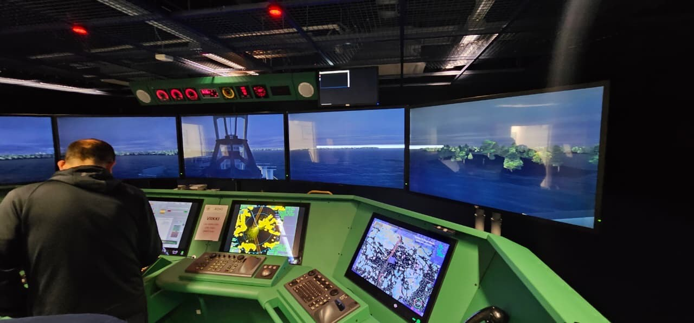

01 — Service
Mentoring & Coaching

Shipping is built by people, and sustained by knowledge.
We support professionals at every stage of their maritime career, strengthening technical and operational competencies (technical management, operational performance, compliance, and environmental & sustainability management), while addressing the human dimension: leadership presence, communication, decision-making under pressure, and professional resilience.
Who we work with
- a.Early career, bridging academic training and real-life shipping operations
- b.Ship-to-shore transitions, during and after the move from sea to shore roles
- c.Career pivots, when professional growth requires exposure to new business segments
We can work on specific cases with specific individuals, support entire departments, or act as an on-call partner whenever your team needs us.